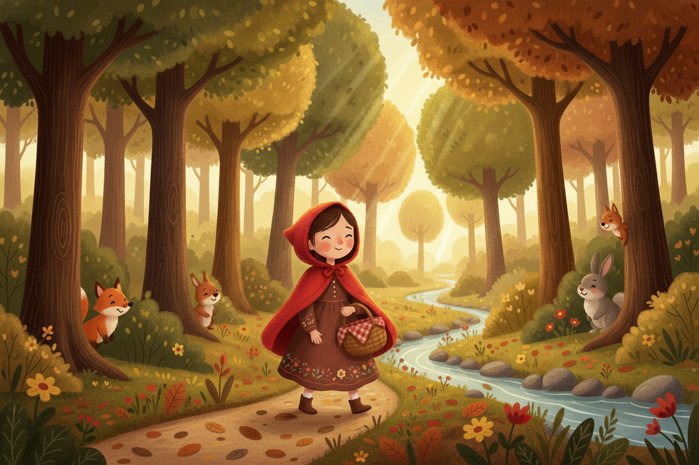
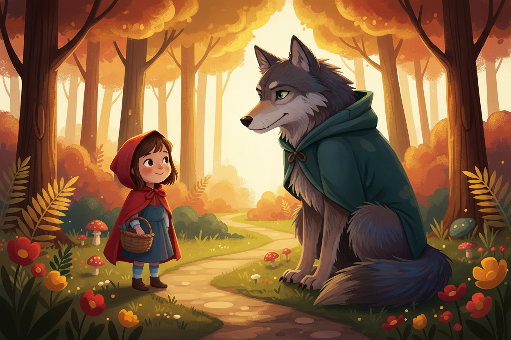
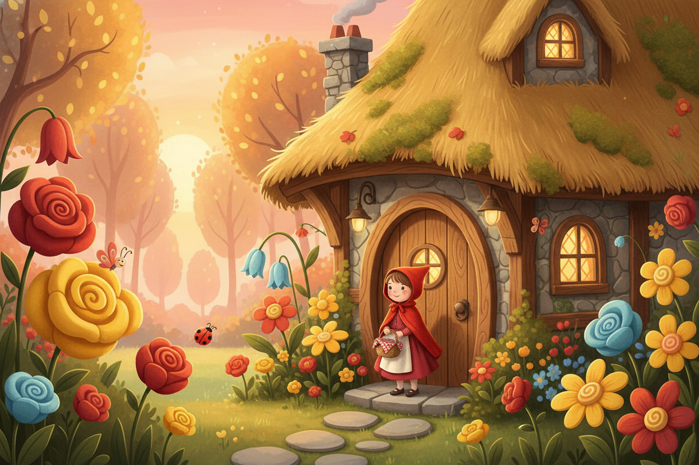
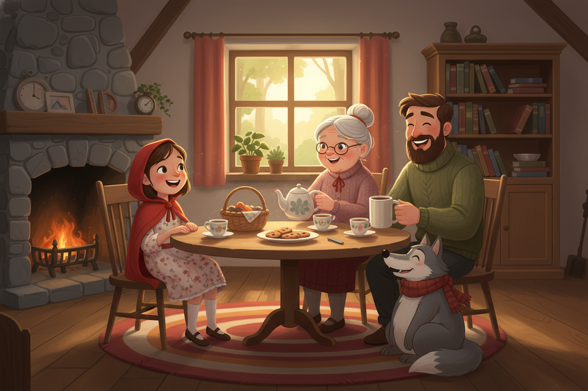

Adéntrate en una historia clásica reinventada con magia, valentía y un final sorprendente para toda la familia

Caperucita Roja caminaba alegremente por el sendero cuando, de repente, una figura majestuosa apareció entre los robles. No era un lobo cualquiera; vestía una capa verde bosque y sus ojos brillaban con una curiosidad amistosa.

Al final del camino de piedras, una acogedora casita con tejado de paja esperaba bajo el sol de la tarde. Las flores de colores rodeaban la entrada, dando la bienvenida a Caperucita.
"¡Qué flores más bonitas tienes aquí, abuelita!"

En el interior de la cabaña, el fuego de la chimenea crepitaba mientras todos se sentaban a la mesa. No hubo miedo, solo risas y el aroma del té.
